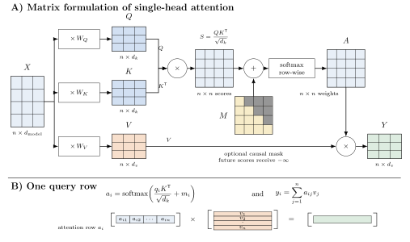
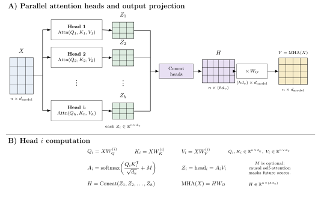

A Walkthrough of Attention
Recently, I’ve been doing some reading on the mechanistic interpretability literature as part of a project that I’m working on, and one of the central ideas is attention. So I thought it might be worthwhile to consolidate my learnings in this post. While the main focus of this post is the attention mechanism, the concrete running example follows a GPT-2-style decoder-only architecture — so the dimensions (768), the learned positional embeddings, and the causal masking throughout all reflect GPT-2 rather than the original encoder-decoder transformer. I want to briefly touch on some other parts of the transformer architecture before going through the attention block.
Single-Head Attention Example
We’ll start with a concrete (and small) example to build up the story, and in the second half of the post we’ll come up with a more general formulation (i.e. the computational graph).
Step 1: Tokenization
For simplicity and ease of explanation, we will be using a word-level tokenizer. This does not change the conceptual picture, but note that in practice models often use subword tokenization. For more on tokenizers, see the byte pair encoding (BPE) algorithm.
So, let’s say our input is “The cat sat”. The first thing we’d want to do is tokenize it. Since we’re using a word-level tokenizer, we get “The”, “cat”, “sat”, and each token has some kind of token ID. For simplicity, we’ll assume the following:
| Word | Token ID (int) |
|---|---|
| The | \(t_1\) |
| cat | \(t_2\) |
| sat | \(t_3\) |
Step 2: Embedding
Now, a model has no way to process strings natively, so we need to convert them into vector representations. This is what we call an embedding. We get an embedding table that looks something like this:
| Token ID | Embedding Vector |
|---|---|
| \(t_1\) | \(e_1 \in \mathbb{R}^{768}\) |
| \(t_2\) | \(e_2 \in \mathbb{R}^{768}\) |
| \(t_3\) | \(e_3 \in \mathbb{R}^{768}\) |
We represent these as 768-dimensional vectors here because that’s the size used by GPT-2 Small (it holds no other significance).
Step 3: Positional Encoding
Now, we need some way to encode the position of the words in the sentence. GPT-2 uses learned positional embeddings — a lookup table trained alongside the model. (The original transformer paper instead uses fixed sinusoidal encodings, but the end result fed into the attention block is the same: a position vector added to the token embedding.) We have another positional encoding lookup table:
| Position | Encoding Vector |
|---|---|
| 1 | \(p_1 \in \mathbb{R}^{768}\) |
| 2 | \(p_2 \in \mathbb{R}^{768}\) |
| 3 | \(p_3 \in \mathbb{R}^{768}\) |
Note that the first lookup table maps token IDs to vectors, while the second maps positions to vectors.
Now we want to add these two vectors together. This gives a model a way to represent each word along with its position, so we end up with \(x_i = e_i + p_i\). Note that each \(x_i \in \mathbb{R}^{768}\).
Now, we stack these up nicely in a matrix
\[ X = \begin{bmatrix} \text{— } x_1 \text{ —} \\ \text{— } x_2 \text{ —} \\ \text{— } x_3 \text{ —} \end{bmatrix} \]
In this example, \(X\) is a \((3,768)\) dimensional matrix. We now pass this into the first transformer block.
Step 4: Transformer Block (Decoder-Only)
Note on terminology: The original transformer paper has two kinds of blocks — an encoder block and a decoder block. GPT-2 drops the encoder entirely and uses only the masked self-attention + feed-forward portion. This is what is described below; there is no cross-attention here.
To isolate the mechanics, this first walkthrough treats attention as a single full-width head. In the multi-head GPT-2-style formulation later in the post, each head instead projects the same input into its own lower-dimensional query, key, and value spaces.
Assume now that we have three weight matrices: \(W_q, W_k, W_v\). Each of these matrices has dimensions 768 by 768. We now multiply our input matrix \(X\) by each of these to get the following results: \[ \begin{aligned} Q = XW_q \text{ ; } Q \in \mathbb{R}^{3 \times 768} \\ K = XW_k \text{ ; } K \in \mathbb{R}^{3 \times 768} \\ V = XW_v \text{ ; } V \in \mathbb{R}^{3 \times 768} \\ \end{aligned} \] Note that these still have the same shape as our input matrix \(X\). But what do these really represent?
Attention Formula
\[ \text{attention} = \text{softmax}\left( \frac{QK^T}{\sqrt{d_k}} + M \right)V \] Now let’s break this formula down and see what it’s really doing. We’ll revisit it shortly, but it’s useful to have the full expression in mind first.
Query
Each row in the query matrix corresponds to a token. When we’re trying to compute attention, the query vector can be thought of as representing the token whose output we’re currently updating. For example, if you look at row two of the query matrix in our example, it means we’re focused on the word cat.
Key
Like the \(Q\) matrix, each row also corresponds to a token. A key vector gives the model something to compare a query against, so it might encode properties such as what kind of word it is or what syntactic dependencies it participates in.
To be more precise, the point is not that keys necessarily represent grammatical structure, but that they represent properties that make a token relevant to another token’s query. The above are just examples of how our human mind might comprehend this, but there is nothing in the loss function that explicitly tells the \(K\) matrix to store grammatical substructure.
Value
Think of each row in this matrix as representing a word and each column as representing a feature. A useful mental model that I like to hold when thinking about the value matrix is how we build a linear regression feature matrix. In linear regression, we have an \((n,d)\) matrix where we have \(n\) data points and \(d\) features. Of course, in the case of the \(V\) matrix, we don’t really know what the features are and are far less interpretable.
Okay, that was a handful of jargon, but I think having that little bit of background is going to help us compute the attention.
Single-Head Attention
So the first step in computing the attention is multiplying the query and key matrices, so we get \(QK^T\). This intermediate matrix is of size 3 by 3.
Now what is this telling us?
To see this, let’s walk through what happens with one row of the \(Q\) matrix. Let’s just take the second row for example’s sake. When we do this multiplication, we multiply the second row of the \(Q\) matrix with each row of the \(K\) matrix (equivalently, multiply that query row by the columns of \(K^T\)). This dot product gives us a scalar. The higher the value, the more “similarity” they have in some sense (need not be semantic similarity).
So essentially we’re saying - okay, my current word (query) is “cat”. When we multiply its query vector with the keys, each dot product gives a compatibility score between that query and a key. After softmax, these scores become weights that determine how strongly the corresponding values contribute to the output.
For a brief moment, let’s consider a broader example, and say we had the sequence: “My cat sat on my lap. It was purring”. If my query here is the word “It”, and I’m looking at the entry in the key matrix that corresponds to “cat”, then the score(“It”, “cat”) might be high because “it” can refer back to a singular noun, and the model may have learned features that make “cat” relevant to that query.
So, let’s take a step back and see what we have at the moment. We go back to our toy example. Note that we have a 3 by 3 matrix after the scaled dot product \(QK^T/\sqrt{d_k}\), which looks something like this
\[ \begin{array}{c|ccc} & K_{\text{The}} & K_{\text{cat}} & K_{\text{sat}} \\ \hline Q_{\text{The}} & 1.0 & 0.5 & 2.0 \\ Q_{\text{cat}} & 0.2 & 1.1 & 1.5 \\ Q_{\text{sat}} & 0.3 & 0.7 & 1.2 \end{array} \]
Technically, the formula is \(QK^T/(d_k)^{1/2}\), so there is a scaling factor involved. The scaling factor prevents the dot product from becoming really large, because a large dot product causes the softmax function to saturate (essentially, the distribution resembles a one-hot encoded vector). In the one-hot limit, these partial derivatives go to zero. In practice, large logits can push softmax close to that saturated regime, making the gradients through the attention scores extremely small.
The Jacobian of the softmax is:
\[ \frac{\partial \sigma_i}{\partial x_j} = \begin{cases} \sigma_i (1 - \sigma_i) & \text{if } i = j \\ -\sigma_i \sigma_j & \text{if } i \neq j \end{cases} \]
Therefore for all the zero entries in the vector, we end up with zero (regardless of which case it falls into). For the entry with 1, and when \(i = j\), we fall into the first case, but since we’re doing \((1-1)\), the gradient goes to 0.
You can assume the values in this table are already scaled values.
(Note that the values chosen in the table are arbitrary illustrative values.)
Now, in causal attention, we don’t want the model to see future words (that would be a violation), so we apply a mask and end up with a lower triangular pattern. The masked positions are set to \(-\infty\) before softmax so that their attention weights become zero.
\[ \begin{array}{c|ccc} & K_{\text{The}} & K_{\text{cat}} & K_{\text{sat}} \\ \hline Q_{\text{The}} & 1.0 & -\infty & -\infty \\ Q_{\text{cat}} & 0.2 & 1.1 & -\infty \\ Q_{\text{sat}} & 0.3 & 0.7 & 1.2 \end{array} \]
Now, we apply the softmax to each row, so we get a normalized probability distribution. So far this is what we’ve done mathematically, where \(M\) is the causal mask: \[ A = \text{softmax}\left( \frac{QK^T}{\sqrt{d_k}} + M \right) \] which gives us a matrix that looks something like this:
\[ \begin{array}{c|ccc} & K_{\text{The}} & K_{\text{cat}} & K_{\text{sat}} \\ \hline Q_{\text{The}} & 1.000 & 0.000 & 0.000 \\ Q_{\text{cat}} & 0.289 & 0.711 & 0.000 \\ Q_{\text{sat}} & 0.202 & 0.301 & 0.497 \end{array} \]
Now the final step is to multiply this matrix with the \(V\) matrix. Let’s call the result of the softmax \(A\).
Row \(i\) of \(A\) contains the attention weights for token \(i\) over all positions \(j\). Multiplying by \(V\) produces, for each token \(i\), a weighted sum over positions \(j\): \(\text{output}_i = \sum_j A_{ij} \cdot V_{j}\), where \(V_j\) is the value vector for position \(j\). Position \(j\) contributes in proportion to \(A_{ij}\); masked positions have \(A_{ij} = 0\) and contribute nothing.
For example, “cat” is token \(i=2\), with weights \(A_{2,\cdot} = [0.289,\ 0.711,\ 0.000]\) across positions \(j = 1, 2, 3\), so its output is \(0.289 \cdot V_1 + 0.711 \cdot V_2\) — no contribution from \(V_3\).
Now, putting all of this together, we get the attention output: \[ \text{attention} = \text{softmax}\left( \frac{QK^T}{\sqrt{d_k}} + M \right)V \]
(It is useful to think of the 768 dimensions as an arbitrary feature representation. Think back to linear regression, except these features are much less interpretable and do not have a clean human-readable definition. They are just dimensions the model can use to mix, match, and represent the data.)
The idea here is that attention gives each token position a context-dependent representation. Under causal masking, that context only includes the current token and earlier tokens; for example, the representation at “cat” cannot depend on the later token “sat”.
In a GPT-2 block, this attention output is added back to the residual stream before the feed-forward sublayer. The layer normalization, residual connections, and feed-forward details are outside the focus of this post.
General Formulation of Single-Head Attention

Multi-Head Attention (MHA) Overview
As the name suggests, we now have multiple heads computing the attention independently and then we concatenate the results together. Each head receives the same input \(X \in \mathbb{R}^{3 \times 768}\), but projects it into its own lower-dimensional query, key, and value spaces.
To make this more concrete, each \(\text{head}_i\) is doing the following: \[ \begin{aligned} W_{q_i}, W_{k_i} &\in \mathbb{R}^{768 \times d_k} \\ W_{v_i} &\in \mathbb{R}^{768 \times d_v} \end{aligned} \] \[ \begin{aligned} Q_i &= XW_{q_i} \text{ ; } Q_i \in \mathbb{R}^{3 \times d_k} \\ K_i &= XW_{k_i} \text{ ; } K_i \in \mathbb{R}^{3 \times d_k} \\ V_i &= XW_{v_i} \text{ ; } V_i \in \mathbb{R}^{3 \times d_v} \end{aligned} \] Then, we compute attention like we did earlier: \[ \text{head}_i = \text{softmax}\left( \frac{Q_iK_i^T}{\sqrt{d_k}} + M \right)V_i \text{ ; } \text{head}_i \in \mathbb{R}^{3 \times d_v} \]
Then, finally we concatenate the head outputs to get: \[ H = \text{Concat}\left(\text{head}_1, \ldots, \text{head}_h\right) \text{ ; } H \in \mathbb{R}^{3 \times h d_v} \]
Then, we apply one final projection to get: \[ \begin{aligned} W_o &\in \mathbb{R}^{h d_v \times 768} \\ \text{MHA}(X) &= HW_o \in \mathbb{R}^{3 \times 768} \end{aligned} \]
This final output projection helps the outputs of the different attention heads mix and interact with each other.
Now, you may be wondering why even bother with multi-head attention? How does it help us?
Well, the simple answer is it helps the model be more expressive by allowing different heads to learn different attention patterns over the input. This can lead to specialized features, although each head does not always specialize cleanly.
For example, one head might specialize in syntax, another might specialize in position, and another one might specialize in long-range dependencies. In fact, a particularly interesting paper has shown that attention heads can be removed at test time (inference), without much degradation in performance.
The specialization of attention heads is an emergent property: the training objective does not explicitly assign different roles to different heads, but during optimization the model often discovers that using different heads for different attention patterns reduces loss.
General Formulation of Multi-Head Attention (MHA)

Notes
Please note that this post was written by me and proofread by AI. Since I haven’t had another pair of (human) eyes read this, the post is prone to errors. If you happen to find any, please notify me at adityaiyer{dot}m{@}gmail{dot}com.
Feedback is always welcome! If you have any comments on how things could have been done differently or on areas where my explanation was lacking, please feel free to contact me.